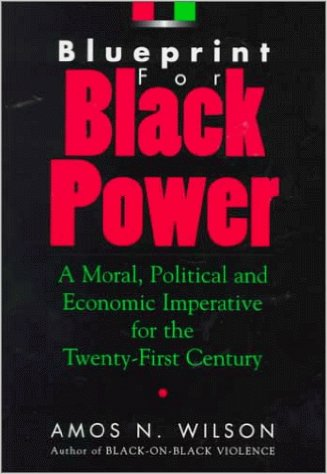

I come from Africa by way of West Mooreland, Jamaica and Mount Vernon, NY. I have traced my bloodline to the Fulani and Hausa ethnic groups in western Africa. My great grandparents were delivered to the sugar plantations owned by a Slave Master with the last name of Bell. I plan to rid myself of this ghost of enslavement in due time. My parents emigrated to the U.S. shortly after getting married in search of a better life. Thus I am here today.
I like to read, meditate, excercise, debate and expand my consciousness in general.
I wish to develop the platform and program by which the Black Community can seriously begin to engage in group Economics and establish the economic basis for Black Power as described by the honorable Amos Wilson in his magnificent work "BluePrint for Black Power"
Depending upon how dramatically married life impacts my projections, within 5 years I plan to travel the length and bredth of the U.S. amassing a database of Black owned businesses.
